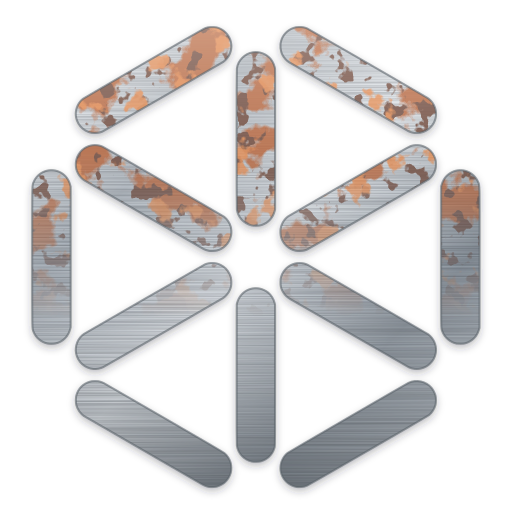

Plan de diseño de la app Android · Cámara de corrosión inteligente · PIC1 2026 · Grupo 17
Borrador v0 · basado en los ADR 0001–0012 · rama UI-Design
El nombre juega con lo que mide la cámara: UTEC + corroe. El icono toma el logo de UTEC Uruguay y lo cuenta como lo que le pasa a un metal dentro de la cámara.
Las 12 barras del logo oficial (utec_logo.svg, celeste #00AEEF) en metal cepillado sobre fondo blanco, con óxido que baja desde arriba y se apaga hacia el centro: lo de arriba está corroído y lo de abajo todavía no.
docs/UTECorroe-icono.svg (512×512), construido sobre el trazado de utec_logo.svg.VectorDrawable; se rasteriza a PNG por densidad o se arma el óxido con formas.#8A939C#4A525A#B4501C#E7A36F#00AEEFEl celeste sale del logo oficial (#00AEEF); los demás hex son propuestas. Estados de salud (OK / aviso / error) en verde, ámbar y rojo, nunca en óxido, para no confundir "acción" con "problema".
build.gradle.kts) con un ColorScheme propio: superficie metálica gris clara, botón primario en óxido, celeste para enlaces, progreso y estado "conectado".strings.xml).Cada decisión técnica aceptada se traduce en una obligación de diseño. Los ADR en estado Propuesto están marcados porque pueden mover pantallas.
| ADR | Decisión | Consecuencia en la UI |
|---|---|---|
| 0003 | El inicio solo recibe duración; la temperatura se observa, no se fija | Nunca mostrar un campo "temperatura objetivo". La temperatura es una lectura en vivo y una serie del historial. |
| 0004 | Historial en Room dentro del teléfono; el ESP32 guarda 2 ensayos para sincronizar | Pantalla de historial con detalle, gráficos y exportar CSV. Sincronizar al conectar, con aviso de huecos y de "pérdida de hasta 10 min por corte de energía". |
| 0005 | Firmware de prueba BLE aparte | La app actual (parpadeo de LED) se conserva como pantalla oculta de diagnóstico hasta que la integración funcione. |
| 0006 | Operaciones atómicas, recetas JSON ≤ 4 KB, protocolo NUS por líneas, una conexión BLE a la vez | Editor de recetas (pasos y ciclos de un nivel), carga con CRC y progreso, pantalla de progreso alimentada por eventos ev,…, control manual, calibración. Manejar "ya hay otro teléfono conectado". |
| 0006 | Concentración objetivo (5 % NaCl, ASTM B117) | El usuario ingresa % y la app muestra gramos y ml resultantes. Advertir cuando los pasos manuales en g/ml no den la concentración buscada. |
| 0007 · 0009 · 0010 | Electroválvula, sinfín con paso a paso, bomba 5 V y tubo perforado | Cada operación de la receta es un bloque con su ícono y sus límites por dosis. Paso opcional de limpieza de agujas. |
| 0008 Propuesto | Alimentación 12 V y cargas | Sin impacto directo. Si cambia el hardware, puede aparecer un estado de energía. |
| 0011 | Electrodos de grafito, calibración con 3 soluciones (0 / 2,5 / 5 %) | Asistente de calibración de conductividad. La compensación por temperatura se registra junto a cada muestra. |
| 0012 Propuesto | Volumen por tiempo de bomba + reeds; el depósito de agua limpia no tiene sensor | Telemetría con volumen estimado. La app lleva la cuenta del depósito limpio y avisa "falta agua" por estimación. La capacidad lleno-vacío alimenta advertencias del editor. |
Wireframes de baja fidelidad para acordar estructura, no estilo final.
nivel(agua,…), nivel(sal,…), bomba, mezclar, con unidades físicas y la concentración resultante.calibrar(…).| Situación | Origen | Qué ve el usuario |
|---|---|---|
| Teléfono desconectado durante un ensayo | BLE | Banner "El ensayo sigue en la cámara". Reconexión automática y sincronización al volver. No es un error. |
| Ya hay otro teléfono conectado | ADR 0006 | "La cámara tiene otra conexión activa. Cerrala en el otro teléfono." |
Dosis terminó con motivo lleno | ev,dosis | Aviso informativo, no error: "Se cortó el agua al llenarse el tanque (pedido 800 ml, real 620 ml)". |
Ensayo abortado: tanque vacío, detener, fallo | ev,abort,<motivo> | Tarjeta roja con el motivo, el momento y el progreso alcanzado. El ensayo queda en el historial como incompleto. |
| Reinicio de la cámara a mitad de ensayo | ev,abort,reinicio | "Se cortó la energía. Por seguridad no se retoma solo." Con opción de iniciar uno nuevo. |
| Receta rechazada | err,<código>,… | Mensaje en lenguaje llano y el paso culpable resaltado en el editor. |
| Conductividad no coincide con lo esperado | ADR 0006/0011 | Indicador ámbar: el sensor verifica pero no corrige. Mostrar cuánto se desvía. |
| Falta agua en el depósito limpio | Estimación, ADR 0012 | Aviso por cuenta de volumen, sin sensor. Se confirma a mano. |
Sobre lo que ya existe: Kotlin, Compose, Kable. Se reemplaza el BlinkViewModel por capas con una responsabilidad cada una.
StateFlow y mandan intenciones.ConnectionVM, LiveVM, RecipeEditorVM, HistoryVM, CalibrationVM.sal conc exige agua lleno antes), conversión concentración↔gramos, y reductor de eventos ev,… a estado del ensayo.ok/err. Probable de testear en JVM sin teléfono.Ensayo, Muestra (clave ensayo+secuencia, deduplicación), Receta, Calibracion.BleConstants.kt a los UUID de NUS, capa de líneas y diagnóstico. Depende de que el firmware integre BLE (ADR 0005/0006).t,…, eventos, progreso, Detener. Primero contra un firmware simulado.historial,<n>, detalle con gráficos, CSV.Las fases 1, 3 y 4 se pueden avanzar con un simulador de la cámara (un fake del transporte que emita líneas del protocolo), sin esperar el hardware.
inicio rápido.inicio(segundos) como botón para pruebas.